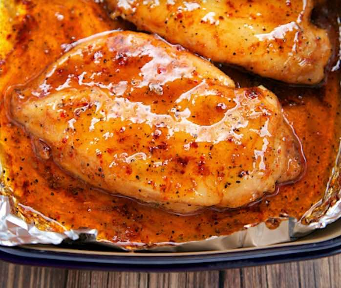

3-INGREDIENT BROWN SUGAR ITALIAN CHICKEN
Main DishChicken
Servings6 people
PrepPT5M
CookPT20M

Ingredients
- 4 to 6 boneless skinless chicken breasts
- 1/2 cup brown sugar
- 1 (0.7-oz) packet Italian Dressing Mix
Directions
- Preheat oven to 425°F. Line a 9x13-inch baking pan with aluminum foil.
- Combine the brown sugar and Italian dressing mix. Coat both sides of the chicken with the brown sugar mixture. Place in prepared pan. Top chicken with any remaining brown sugar mixture.
- Bake for 20 to 25 minutes.
- Turn broiler on HIGH. Broil chicken until brown sugar caramelizes, about 1 to 2 minutes. Watch it carefully so it doesn't burn!
Notes
3-Ingredient Brown Sugar Italian Chicken - brown
sugar, Italian dressing mix and chicken. Ready in
under 30 minutes! Everyone loved this dish! I
loved that there was no prep work! Such an easy
weeknight meal that the whole family enjoyed!
This page includes Schema.org Recipe structured data for recipe importers.